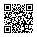

☕ Support development
Thanks for stopping by. Header Tool and AI Chat Exporter are free to use, with no limits and no locked features.
They are built and maintained by one person in spare time. If they save you time and you would like to say thanks, a small donation helps cover the work of keeping them running as Chrome and the supported sites change.
Donations are voluntary and don't unlock features. Everything works exactly the same whether or not you donate, and there is no account, tracking or follow-up email.
Ways to donate
Donate with USDT (TRON / TRC20)

TGcLbobe16k57q3j8sjT4pWywk96LMaXNT
Send only USDT on the TRON (TRC20) network. Tokens sent on other networks (Ethereum, BNB Chain, TON…) will be lost.
Donations are voluntary and don't unlock any features. Everything works exactly the same whether or not you donate, and there is no account, tracking or follow-up email.
Thank you! Questions: work.whitelight@gmail.com
The extensions never handle payments and never see any payment details. This page is the only place donations are mentioned.